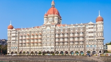
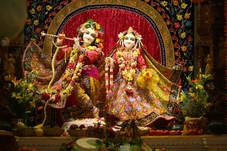

Top sights in Mumbai
Taj Mahal Palace, Mumbai
Mumbai’s most famous landmark, this stunning hotel is a fairy-tale blend of Islamic and Renaissance styles, and India’s second-most photographed monument. It was built in 1903 by the Parsi industrialist JN Tata. Dozens were killed inside the hotel when it was targeted during the 2008 terrorist attacks, and images of its burning facade were beamed worldwide. The fully restored hotel reopened on Independence Day 2010.
Elephanta Island

Northeast of the Gateway of India in Mumbai Harbour, the rock-cut temples on Gharapuri, better known as Elephanta Island, are a Unesco World Heritage Site. The main Shiva-dedicated temple is an intriguing latticework of courtyards, halls, pillars and shrines; its magnum opus is a 6m-tall statue of Sadhashiva, depicting a three-faced Shiva as the destroyer, creator and preserver of the universe, his eyes closed in eternal contemplation.
Iskcon Temple
Iskcon Juhu plays a key part in the Hare Krishna story, as founder AC Bhaktivedanta Swami Prabhupada spent extended periods here (you can visit his modest living quarters in the adjacent building). The temple compound comes alive during prayer time as the faithful whip themselves into a devotional frenzy of joy, with kirtan dancing accompanied by crashing hand symbols and drumbeats.